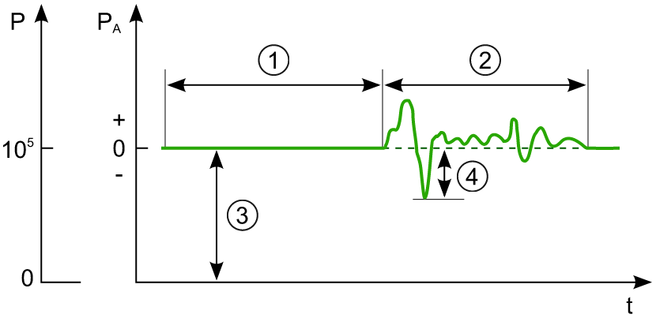
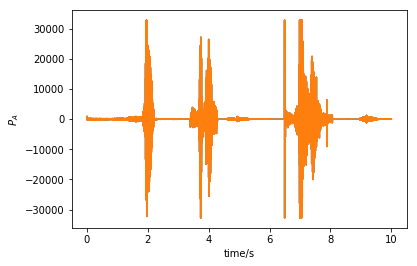
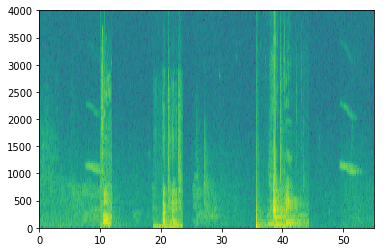
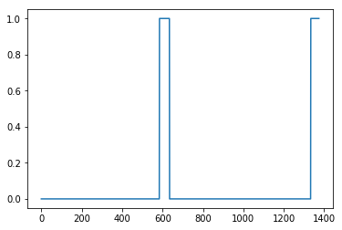
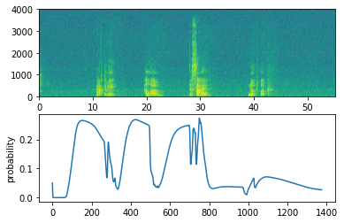

前言
花了一些时间填补了 WAV 文件的基础知识和快速傅里叶变换算法的内容。终于可以继续学习深度学习啦！前段时间买了个小米的小爱同学，用来睡前关灯还是挺方便的，这次的实验就是研究小爱同学究竟是如何被唤醒的。
触发词检测
这次的任务是收集语音数据集并且实现触发词（也称关键字或者唤醒字）检测。举个例子：小米的小爱同学，在检测到触发词“小爱同学”后，就会被唤醒。这里的触发词是 “activate”。
数据合成：创建语音数据集
在真实场景中，还会有其他声音，例如负面词（一些其他的词）和环境背景噪声（会和触发词混合在一起出现）。很难收集大量的音频，通常都是单独下载背景噪声然后将触发词、负面词与背景噪声混合。
- 正面词
- 负面词
- 背景噪声
波形图
声音是弹性介质中压力变化形式的机械能，这些压力变化来自振动源的波传播。声音在介质中传播时，会造成介质的压缩和稀疏，从而引起原有环境压强的变化。压缩是比环境压力更高的时段，稀疏是压力低于环境压力的时段。

波形图 (Waveform) 如上所示，总压强等于环境静态压强（即标准大气压
1 | from scipy.io import wavfile |

这里的 WAV 文件使用的是 16 位量化数字，因此声压的取值范围是 (-32768, 32767)，音频时长为 10 秒。波形图看不出声音的特征，因此需要对其使用傅里叶变换，得到频谱图再分析声音的特征。
波形图
通过傅立叶变换可以得到信号的频谱，傅立叶变换有一个假设就是信号是平稳的，即信号的统计特性不随时间变化。声音信号就不是平稳信号，在很长的一段时间内，有很多信号会出现，然后立即消失。如果将这信号全部进行傅立叶变换，就不能反映声音随时间的变化。
短时傅里叶变换
声音信号虽然不是平稳信号，但在较短的一段时间内可以看作是平稳的，所以解决方案是取一小段进行傅立叶变换，即短时傅立叶变换（Short-time Fourier transform）。
窗函数
从一段长的信号截取一段信号（通常在0.02~0.05s，称为一帧），相当于将原始信号乘以一个方窗，而方窗的傅里叶变换并不是理想的冲击函数，所以用 sinc 函数，sinc 较高的副瓣意味着在真实频点以外，副瓣的位置上的频谱也会不为零。如果在副瓣的位置上恰好有一个幅度很小的信号，就会被完全淹没。解决方案是使用窗函数，代替简单地截取一段信号，在窗的边缘，信号会乘上一个很小的数。这又会导致边缘数据并没有充分被利用，两个相邻窗之间的信号没有完全反映到频谱当中。因此解决办法是两个相邻的窗有一定的重叠，同时如果需要恢复成为时间序列，也能弥补窗函数带来的影响。总之一句话就是取一小段信号进行短时傅里叶变换会导致数据丢失，因此两个相邻的窗口之间需要有一定的重叠，重叠取加可以选择为窗长度的 50% 或者 25%。
声谱图
语音的时域分析和频域分析是两种语音分析方法，但是这两种分析方法都有局限性。时域分析对语音信号的频率没有直观的了解，而频域分析出的特征中又没有语音信号随时间变化的关系。声谱图（语谱图）是一种三位频谱，表示语音频谱随着时间变化的图形。
1 | from scipy.io import wavfile |

横坐标为时间，纵坐标为频率。任意给定频率成分，在给定时刻的强弱用相应点的色调的浓淡来表示，颜色越深表示语音能量越强（声音更加响亮）。10 秒音频输出 pxx 的时间步长度为：
生成训练示例
为了合成一个训练样本，需要：
- 随机选择一个 10 秒的背景音频剪辑
- 随机将 0-4 个正面音频片段插入此 10 秒剪辑中
- 随机将 0-2 个反面音频片段插入此 10 秒剪辑中
通常使用 pydub 来处理音频。 Pydub 将原始音频文件转换为 Pydub 数据结构列表，使用 1ms 作为离散化间隔，因此 10 秒剪辑一共有 10,000 个时间步。我们希望在背景噪声中插入多个触发词和负面，同时不希望这些词重叠（声音合成而不是声音拼接，最终输出音频还是 10 秒）。
首先初始化背景噪声的标签，因为里面还没有触发词，所以对于所有的

合成训练数据还有一个好处就是容易生成标签，如果在录制声音的时候手动标记是非常耗时的。
辅助函数
为了实现训练集的合成，还需要以下辅助函数，这些函数都使用 1 毫秒离散化间隔，即 10 秒的音频总是被离散化成 10,000 步。
get_random_time_segment(segment_ms)从背景音频中选择指定长度的随机时间片段；1
2
3
4
5def get_random_time_segment(segment_ms):
segment_start = np.random.randint(low=0, high=10000-segment_ms) # 防止超出 10s
segment_end = segment_start + segment_ms - 1
return (segment_start, segment_end)is_overlapping(segment_time, existing_segments)判断时间片是否与先前的时间片重叠；1
2
3
4
5
6
7
8
9
10
11
12
13def is_overlapping(segment_time, previous_segments):
segment_start, segment_end = segment_time
# Step 1: Initialize overlap as a "False" flag.
overlap = False
# Step 2: loop over the previous_segments start and end times.
# Compare start/end times and set the flag to True if there is an overlap.
for previous_start, previous_end in previous_segments:
if segment_start <= previous_end and segment_end >= previous_start:
overlap = True
return overlap1
2
3
4overlap1 = is_overlapping((950, 1430), [(2000, 2550), (260, 949)])
overlap2 = is_overlapping((2305, 2950), [(824, 1532), (1900, 2305), (3424, 3656)])
assertFalse(overlap1)
assertTrue(overlap2)insert_audio_clip(background, audio_clip, existing_times)使用上述两个辅助函数在背景音频的随机时间处插入一个音频时间片，需要完成 4 步：- 以毫秒为单位随机选择时间片；
- 确保时间片与先前的时间片都不重叠，否则返回上一个步骤重新选择时间片；
- 将新时间片添加到现有时间片列表中，以跟踪插入的所有时间片；
- 使用 pydub 将音频重叠在背景噪声中（使用 overlay 函数）。
1
2
3
4
5
6
7
8
9
10
11
12
13
14
15
16
17
18
19
20def insert_audio_clip(background, audio_clip, previous_segments):
# Get the duration of the audio clip in ms
segment_ms = len(audio_clip)
# Step 1: Use one of the helper functions to pick a random time segment onto which to insert
# the new audio clip. (≈ 1 line)
segment_time = get_random_time_segment(segment_ms)
# Step 2: Check if the new segment_time overlaps with one of the previous_segments. If so, keep
# picking new segment_time at random until it doesn't overlap. (≈ 2 lines)
while is_overlapping(segment_time, previous_segments):
segment_time = get_random_time_segment(segment_ms)
# Step 3: Add the new segment_time to the list of previous_segments (≈ 1 line)
previous_segments.append(segment_time)
# Step 4: Superpose audio segment and background
new_background = background.overlay(audio_clip, position = segment_time[0])
return new_background, segment_time1
2
3
4
5np.random.seed(5)
audio_clip, segment_time = insert_audio_clip(backgrounds[0], activates[0], [(3790, 4400)])
audio_clip.export("insert_test.wav", format="wav")
print("Segment Time: ", segment_time)
IPython.display.Audio("insert_test.wav")
insert_ones(y, segment_end_ms)在 ”activate” 之后插入 1 到标签向量中。 1
2
3
4
5
6
7
8
9
10def insert_ones(y, segment_end_ms):
# duration of the background (in terms of spectrogram time-steps)
segment_end_y = int(segment_end_ms * Ty / 10000.0)
# Add 1 to the correct index in the background label (y)
for i in range(segment_end_y + 1, segment_end_y + 51):
if i < Ty:
y[0, i] = 1
return y注意标签一共有 1375 个时间步，因此不能越界。测试一下：
1
2
3arr1 = insert_ones(np.zeros((1, Ty)), 9700)
plt.plot(insert_ones(arr1, 4251)[0,:])
print("sanity checks:", arr1[0][1333], arr1[0][634], arr1[0][635])sanity checks: 0.0 1.0 0.0

生成训练样本
实现 create_training_example() 来生成所有训练样本：
- 将标签向量
初始化为零值的 numpy 数组； - 将已存在时间片集合初始化为空列表；
- 随机选择 0 至 4 个 “activate” 音频剪辑，并将其插入 10 秒剪辑，记着将标签插入标签向量
中的正确位置； - 随机选择 0 到 2 个负面音频片段，并将它们插入 10 秒片段。
1 | def create_training_example(background, activates, negatives): |
开发测试集
为了测试模型，实验记录了 25 个样本的开发集。虽然训练数据是合成的，但是开发集应该与实际输入具有相同的分布，因此实验手工标记了 25 个 10 秒钟的音频剪辑。
1 | # Load preprocessed training examples |
模型
实验模型使用一维的卷积层、GRU 层和全连接层，首先载入相关的包：
1 | from keras.callbacks import ModelCheckpoint |
构建模型
模型结构如下图所示：

该模型的一个关键步骤是一维卷积步骤，它的输入是 5511 个时间步的频谱，然后输出一个 1375 个时间步的输出。从计算的角度而言，卷积层有助于加速模型，经过卷积层后 GRU 仅处理 1375 个时间步而不是 5511 个时间步。两层 GRU 从左往右读入绪论，然后使用全连接神经网络加 Sigmoid 层对
注意：这里使用的是单向 RNN，因为如果想要使用双向 RNN，那么就必须等待整个 10 秒的音频被记录下来后从能确定音频片段是都具有 “activate”。
可以通过以下 4 个步骤来实现模型：
使用
Conv1D()来实现卷积层，有 196 个卷积核，每个卷积核的大小为 15(kernel_size=15)，并且步长为 4；用
X = GRU(units = 128, return_sequences = True)(X)实现 GRU 层，设置return_sequences=True确保所有时间步的隐藏状态都会喂给下一层，同时记得添加 Dropout 和 BatchNorm 层；第二个 GRU 层，和上一个步骤类似，只不过多了一个 Dropout 层；
创建全连接层：
X = TimeDistributed(Dense(1, activation = "sigmoid"))(X)这样全连接层后面就会跟一个 Sigmoid 层，TimeDistributed 可以让每个时间步的全连接层的参数一样。
1 | def model(input_shape): |
拟合&测试模型
1 | opt = Adam(lr=0.0001, beta_1=0.9, beta_2=0.999, decay=0.01) |
这个问题的样本不太均衡，因为神经网络很有可能就将所有的数据判断为 0，即不是触发词。因此需要定义更多有用的指标，例如 F1 分数或者 Precision/Recall。
预测
模型训练完成后就可以用来对真实音频进行预测：
1 | def detect_triggerword(filename): |
计算出在每个输出步骤检测到 “activate” 这个词的概率，当概率超过某个阈值时，就可以触发鸣响。此外，在检测到触发词后，对于后面连续的许多值，标签可能都接近于 1，但是我们只想响一次，因此可以设置每 75 个输出时间步最多响一次，类似于计算机视觉的非最大抑制作用。
1 | chime_file = "audio_examples/chime.wav" |
测试例子
原音频：
接下来对该音频进行预测，如果检测到 “activate”，就发出鸣响：
1 | filename = "audio_examples/my_audio.wav"" |

Sigmoid 的输出大于 0.5，表示检测到了触发词，因此添加了鸣响。
总结
终于完成了 Sequence 系列的实验，对触发词检测的流程有了个大致的了解，但是还是感觉神经网络就像炼丹，知道模型的结构这么设置有什么好处，但是还是不知道为什么要这么设置，都是靠直觉？
参考文献
- 吴恩达. DeepLearning.
- meelo. 短时傅里叶变换解析. https://www.cnblogs.com/meelo/p/5640009.html